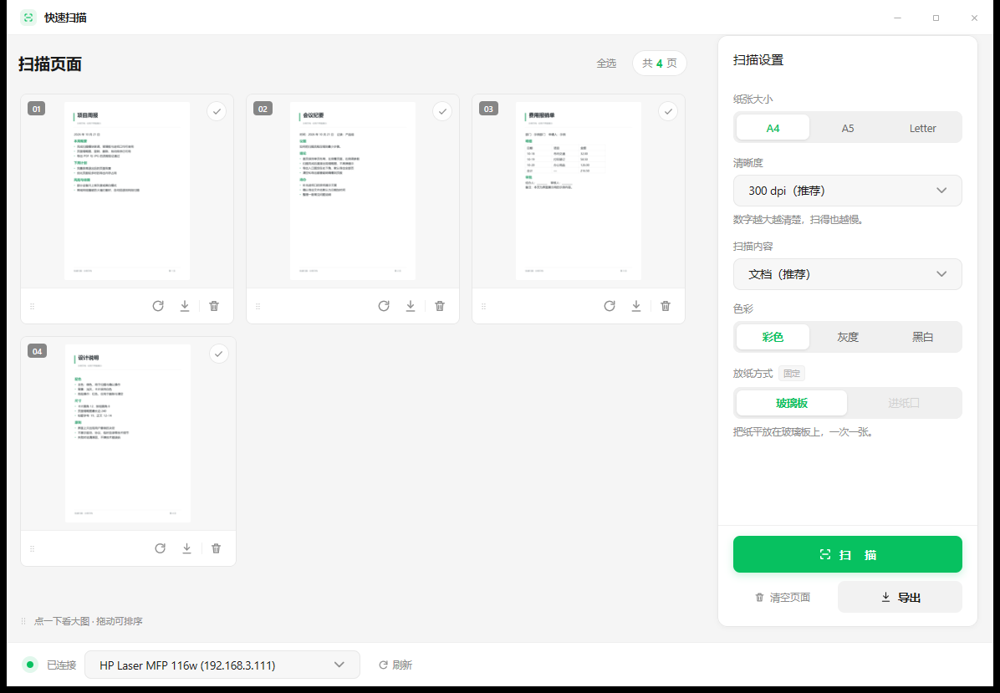
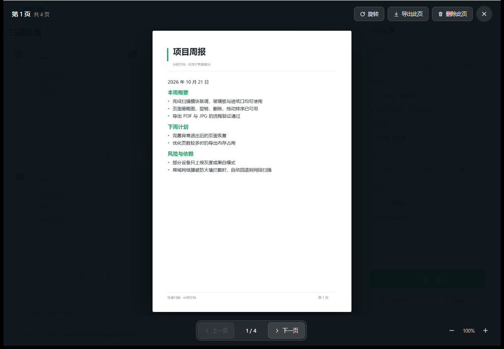

打开就能找到
同一网络里的扫描仪会自动出现，用过的会被记住，下次打开直接选中。
Windows 10 / 11 · 免驱动 · 免费开源
打印机和电脑在同一个网络里，打开软件就能找到扫描仪。扫完直接存成 PDF 或 JPG，不用装厂商驱动，也不用翻说明书。
功能
没有多余的设置，也不用先学怎么用，每一步都顺手。
同一网络里的扫描仪会自动出现，用过的会被记住，下次打开直接选中。
一张一张放玻璃板，或者把整叠纸放进进纸口，让它自己往下扫。
点一下看大图，旋转、删除、拖动排序都在手边，导出前想怎么排都行。
自动铺平灰底、加深文字，强度分轻、标准、强。原始扫描会留着，随时能切回去。
合并成一个 PDF，或每页存一张 JPG。文件名可以用识别出来的标题。
程序没正常关掉，下次打开会让你选：恢复上次的页面，还是从空白开始。
使用
第一次打开也不用设置，纸放好就能开始。
同一网络里的扫描仪会自动出现。状态点变绿，就是连上了。
玻璃板一次一张；进纸口放整叠，让它逐张扫。扫完还能接着加。
合成一个 PDF，或每页一张 JPG。存到哪里由你决定。
界面
界面上只有两栏：扫好的页面，和这次要用的参数。其他的都收起来。


常见问题
不需要。软件直接通过网络和打印机通信，只要两者在同一个网络里。打印机需要支持网络扫描，近几年的网络打印机大多支持。
由你决定。导出时会打开系统的另存为窗口，存桌面、存 U 盘都可以；上次用过的文件夹会被记住。
目前只支持 64 位的 Windows 10 和 11。
不要。免费使用，源码公开，按 MIT 许可发布。
下载
Windows 10 / 11（64 位）· 免费开源 · 打印机需与电脑在同一网络，并支持网络扫描
装好之后不用自己升级，新版本会在后台下载。